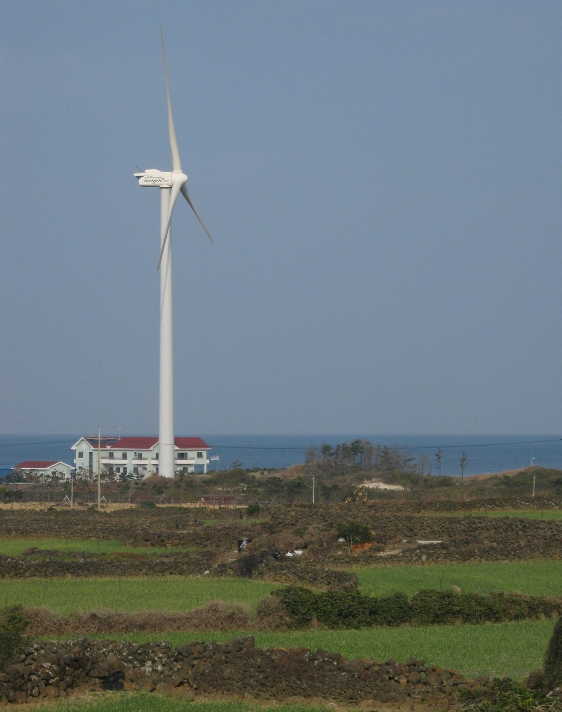

국회 기후노동위, 제주 가상발전소 관제 현장 점검…흩어진 태양광·풍력·ESS 묶어 운영하는 체계 살펴

20~21일 제주 에너지전환 현장시찰, 한림읍 VPP 관제센터에서 AI 발전량 예측·전력시장 입찰·배전망 연계 ESS 확인
국회 기후에너지환경노동위원회가 재생에너지 비중이 높은 제주에서 곳곳에 흩어진 발전 설비를 하나로 묶어 운영하는 가상발전소(VPP) 체계를 점검했다. 김정호 위원장을 비롯한 기후위 여야 의원들은 20일부터 이틀 동안 제주 에너지전환 현장을 돌아보는 일정의 하나로 21일 제주시 한림읍 월령리의 민간 VPP 관제센터를 찾았으며, 이창흠 제주도 기후경제부지사와 제주도청·기후부 관계자들이 함께했다. VPP는 태양광·풍력·에너지저장장치(ESS) 같은 분산 자원을 정보통신기술로 연결해 설비마다 발전량과 상태를 파악하고 전력 수급에 맞춰 관리하는 방식으로, 제주에서는 날씨에 따라 출렁이는 재생에너지 발전량에 대응하는 운영 수단으로 쓰이고 있다. 의원들은 관제센터에서 인공지능을 활용한 발전량 예측과 전력시장 입찰 사례를 듣고 분산 자원의 운영 데이터를 실시간으로 확인하는 과정을 본 뒤, 배전망에 연결된 배터리 ESS가 계통 안정에 어떻게 쓰이는지도 살폈다. 이번 시찰은 재생에너지 설비를 늘리는 데서 나아가 이를 전력계통 안에서 안정적으로 운영하는 방법에 초점을 맞췄으며, 운영사 측은 육지 전력시장에 관련 입찰제도가 도입되면 사업을 넓히겠다는 계획을 밝혔다.
시민에너지 관점
제주가 보여 주듯 재생에너지가 늘수록 문제는 설비가 아니라 수많은 작은 발전소와 저장장치를 어떻게 함께 움직이느냐로 옮겨 간다. 출력이 들쭉날쭉해 계통을 흔든다는 우려가 있지만, 흩어진 자원을 예측하고 묶어 시장에 내놓는 기술이 이미 현장에서 돌아가고 있다. 다만 이 운영 체계를 소수 사업자가 쥐면 분산에너지의 이익도 다시 한곳으로 모이므로, 마을 발전소와 협동조합 같은 주민 소유 설비가 VPP에 참여하고 그 몫을 나눠 받을 수 있어야 분산에너지가 지역의 자산이 된다. 국회는 육지 입찰제도를 설계할 때 작은 주민 발전소도 문턱 없이 들어올 수 있는 규칙부터 담아야 한다.
출처: 에너지신문 2026-10-22 권준범 원문 보기
国会気候労働委、済州の仮想発電所の管制現場を点検…分散した太陽光・風力・ESSを束ねて運用する仕組みを確認
20～21日に済州のエネルギー転換現場を視察、翰林邑のVPP管制センターでAI発電量予測・電力市場入札・配電網連系ESSを確認
韓国国会の気候エネルギー環境労働委員会が、再生可能エネルギーの比率が高い済州で、各地に散らばる発電設備を一つに束ねて運用する仮想発電所（VPP）の仕組みを点検した。キム・ジョンホ委員長をはじめ与野党の委員らは、20日から2日間済州のエネルギー転換の現場を回る日程の一環として、21日に済州市翰林邑月令里の民間VPP管制センターを訪れ、イ・チャンフム済州道気候経済副知事や済州道庁・気候部の関係者も同行した。VPPは太陽光・風力・エネルギー貯蔵装置（ESS）などの分散資源を情報通信技術でつなぎ、設備ごとの発電量と状態を把握して電力需給に合わせて管理する方式で、済州では天候によって揺れ動く再エネ発電量に対応する運用手段として使われている。委員らは管制センターで人工知能を活用した発電量予測と電力市場入札の事例を聞き、分散資源の運用データをリアルタイムで確認する過程を見た後、配電網に接続されたバッテリーESSが系統の安定にどう使われるかも見て回った。今回の視察は再エネ設備を増やすことから一歩進み、それを電力系統の中で安定して運用する方法に焦点を当てたもので、運営会社側は本土の電力市場に関連する入札制度が導入されれば事業を広げる計画を示した。
市民エネルギーの視点
済州が示すように、再エネが増えるほど課題は設備そのものから、無数の小さな発電所と蓄電設備をどう一緒に動かすかへと移っていく。出力が不安定で系統を揺さぶるとの懸念もあるが、分散した資源を予測し束ねて市場に出す技術はすでに現場で動いている。ただ、この運用の仕組みを少数の事業者が握れば分散エネルギーの利益も再び一か所に集まるため、村の発電所や協同組合といった住民所有の設備がVPPに参加し、その取り分を受け取れるようにしてこそ分散エネルギーが地域の資産になる。国会は本土の入札制度を設計する際、小さな住民発電所でも障壁なく参加できるルールをまず盛り込むべきだ。
出典: Energy News 2026-10-22 Kwon Jun-beom 原文を読む
韩国国会气候劳动委员会考察济州虚拟电厂调控现场…了解将分散的光伏、风电和储能聚合运营的体系
20至21日考察济州能源转型现场，在翰林邑VPP调控中心查看AI发电量预测、电力市场投标和配电网联动储能
韩国国会气候能源环境劳动委员会在可再生能源比重较高的济州，考察了把分散各处的发电设备聚合为一体运营的虚拟电厂（VPP）体系。以委员长Kim Jung-ho为首的朝野议员在20日起为期两天的济州能源转型现场考察中，于21日走访了济州市翰林邑月令里的一家民间VPP调控中心，济州道气候经济副知事Lee Chang-heum以及济州道厅和气候部相关人员同行。VPP是用信息通信技术连接光伏、风电和储能（ESS）等分散资源，掌握每台设备的发电量和运行状态，并根据电力供需进行管理的方式；在济州，它被用作应对随天气波动的可再生能源发电量的运营手段。议员们在调控中心听取了利用人工智能预测发电量和参与电力市场投标的案例，观看了实时查看分散资源运营数据的过程，随后又察看了接入配电网的电池储能如何用于电网稳定。此次考察的重点从扩大可再生能源设备进一步转向如何在电力系统中稳定运营这些设备，运营方表示，若本土电力市场引入相关投标制度，将扩大业务。
市民能源视角
正如济州所显示的，可再生能源越多，问题就越从设备本身转向如何让无数小型电站和储能设施协同运行。有人担心出力波动会冲击电网，但预测并聚合分散资源、再投放市场的技术已经在现场运转。不过，如果这一运营体系被少数企业掌握，分散能源的收益又会集中到一处；只有让村级电站和合作社等居民所有的设备参与VPP并分得应有的份额，分散能源才能成为地方的资产。国会在设计本土投标制度时，应首先写入让小型居民电站也能无门槛进入的规则。
来源: Energy News 2026-10-22 Kwon Jun-beom 查看原文
National Assembly climate committee inspects Jeju virtual power plant control centre, examining how scattered solar, wind and storage are run as one
During an Oct. 20-21 tour of Jeju's energy transition, lawmakers viewed AI generation forecasting, power market bidding and grid-connected battery storage at a VPP control centre in Hallim-eup
The National Assembly's Climate, Energy, Environment and Labor Committee has examined, on Jeju Island where renewables make up a large share, a virtual power plant (VPP) system that runs scattered generating facilities as a single unit. Committee chair Kim Jung-ho and lawmakers from both ruling and opposition parties visited a private VPP control centre in Woryeong-ri, Hallim-eup, Jeju City, on the 21st as part of a two-day tour of Jeju's energy transition sites that began on the 20th, joined by Lee Chang-heum, Jeju's vice governor for climate and economy, and officials from the provincial government and the climate ministry. A VPP links distributed resources such as solar, wind and energy storage systems (ESS) through information and communications technology, tracking each unit's output and condition and managing them to match supply and demand; on Jeju it is used to cope with renewable output that swings with the weather. At the centre the lawmakers heard about AI-based generation forecasting and power market bidding, watched operating data from distributed resources being monitored in real time, and then looked at how battery storage connected to the distribution grid is used to stabilise the system. The tour focused not just on adding renewable capacity but on running it reliably within the power system, and the operator said it plans to expand if a related bidding system is introduced in the mainland power market.
Citizen Energy View
As Jeju shows, the more renewables grow, the more the challenge shifts from the equipment itself to how countless small power plants and storage units are made to work together. There are worries that fluctuating output will destabilise the grid, but technology that forecasts scattered resources, bundles them and offers them to the market is already running on the ground. If a handful of companies hold this operating system, however, the gains from distributed energy will pool in one place again; only when resident-owned facilities such as village power plants and cooperatives can join VPPs and receive their share will distributed energy become a community asset. When the National Assembly designs bidding rules for the mainland, it should start with rules that let even small resident-owned plants take part without barriers.
Source: Energy News 2026-10-22 Kwon Jun-beom Read the original